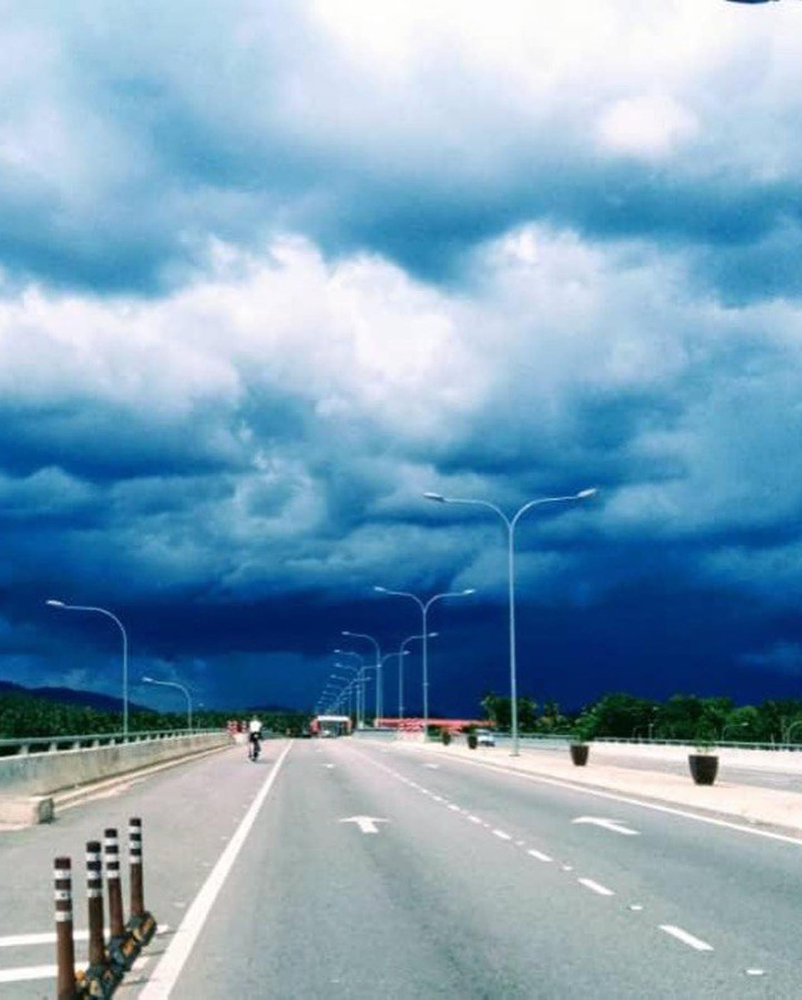
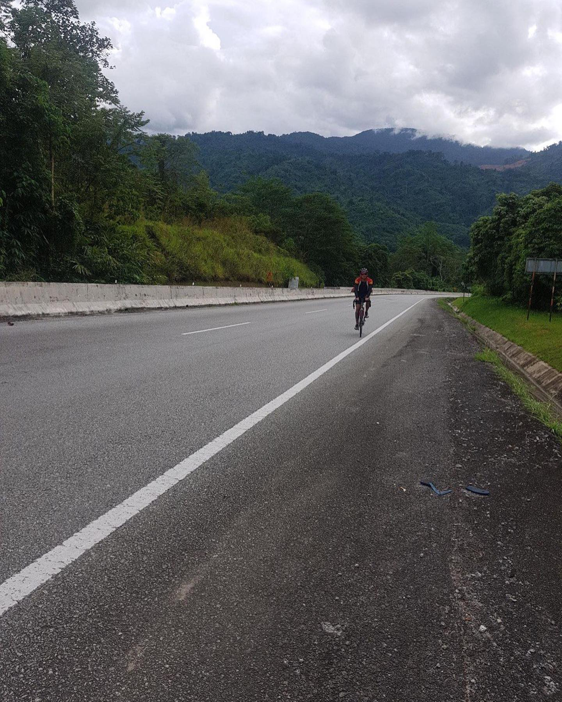
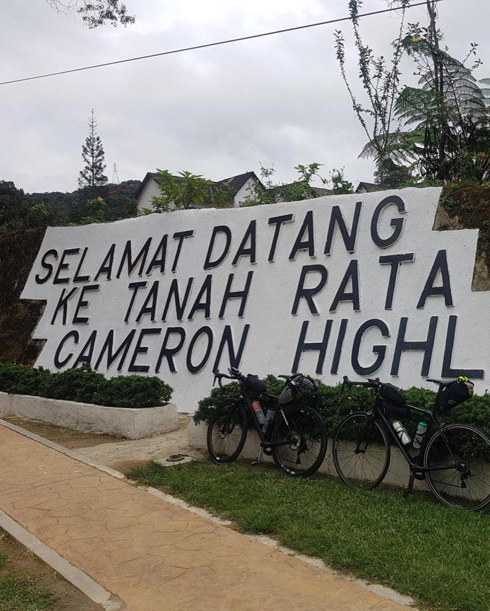
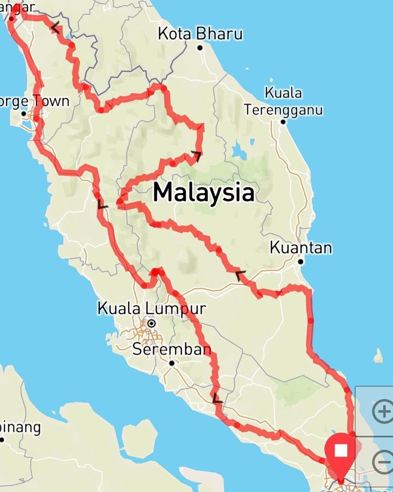

Cannot not share with you these great photos of Steven Hon! Steven is the man who's constantly in South-East Asia's ultra endurance news as he travels thousands of kilometers on bicycle self-supported, but also rides with local Singapore #audax groups and @integrated_riding teams. He is very humble and honest person, and when being asked "how do you do this?" he always has an answer ready: "Don't know... just ride" 😄 we admire him for this. Steven is a stellar inspiration for ultra endurance, and we look forward to catching up with him on his food choices very soon. __ #justride #cyclinglife #stevenhon #singapore #singaporecycling #singaporecyclingfederation #malaysia #athletesofsingapore #endurance #endurancetraining
2019-10-30 13:11:00
Back to main page